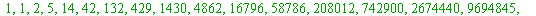

And the continuation, and finalisation
The obvious question to pursue then was this: what can one say about the next object up (as it were), namely: (mod  )
)
Thus, what is the correct shape of the following possible extension:
(mod  )
)
(mod  )
)
What might the unknows and be (the last sign is not important; yes, it could have been 'plus', but then ... )?
There are a couple of candidates for , but an obvious candidate was , and so we ran with:
(mod )
which of course gave that (a possible) would be given by the (mod ) evaluation of the following right-hand side:
And here is that (exciting!) computation for primes  up to 41:
up to 41:
| > | L := []:
for p from 5 by 4 to 41 do if isprime(p) then L := [op(L), p] fi od: for p in L do a||p := a_sign(p): A||p := 2*a||p: NUM||p := PI(p^3, 2, 1): DEN||p := PI(p^3, 4, 1): LHS||p := mods(NUM||p/DEN||p^2, p^3): C||p := (A||p - p/A||p - LHS||p) * (A||p^3/p^2); od: print(``); print(array([['p', ``, ``, 'C'], seq([p, ``, ``, mods(C||p, p)], p = L)])): print(``); |
| (11.1) |
| > |
which strongly suggested that we had this new congruence:
(mod  )
)
And now I speed up: what might '' be in a possible:
(mod )
So, we computed a (mod  ) evaluation of the following right-hand side:
) evaluation of the following right-hand side:
And here it is (note all the appropriately changed powers etc):
| > | L := []:
for p from 5 by 4 to 29 do if isprime(p) then L := [op(L), p] fi od: for p in L do a||p := a_sign(p): A||p := 2*a||p: NUM||p := PI(p^4, 2, 1): DEN||p := PI(p^4, 4, 1): LHS||p := mods(NUM||p/DEN||p^2, p^4): C||p := (A||p - p/A||p - p^2/A||p^3 - LHS||p) * (A||p^5/p^3); od: print(``); print(array([['p', ``, ``, 'C'], seq([p, ``, ``, mods(C||p, p)], p = L)])): print(``); |
| (11.2) |
| > |
| > |
which strongly suggested that we had this new congruence:
(mod  )
)
In my talk I asked for guesses for a possible value of  in this possible congruence:
in this possible congruence:
(mod )
(You will recall your responses ... )
(Once, in BYU (Utah), someone suggested the emerging coefficients could be the Fibonacci numbers: 1, 1, 2, 3, 5, 8, ... )
(Just once, in Galway, someone correctly guessed (a fluke, of course) what's coming up: )
And, it emerged that these successive possible  -values proved to be: the Catalan numbers:
-values proved to be: the Catalan numbers:
where is given by:
, =`(n, 0)" align="center" border="0">
A good internet source is https://en.wikipedia.org/wiki/Catalan_number.
Here are the early ones:
| > | print(``); seq(binomial(2*n, n)/(n+1), n = 0..20); |
|  |
(11.3) |
| > |
So that our discovery was:
(mod  )
)
This is Theorem 7 of our mod p^3 Acta Arithmetica paper of 2010.
Besides this we also obtained a similar congruence in connection with Jacobi's binomial coefficient congruence, one which Jacobi obtained in 1837, while Gauss was still alive (did Gauss try, but fail to obtain it?)